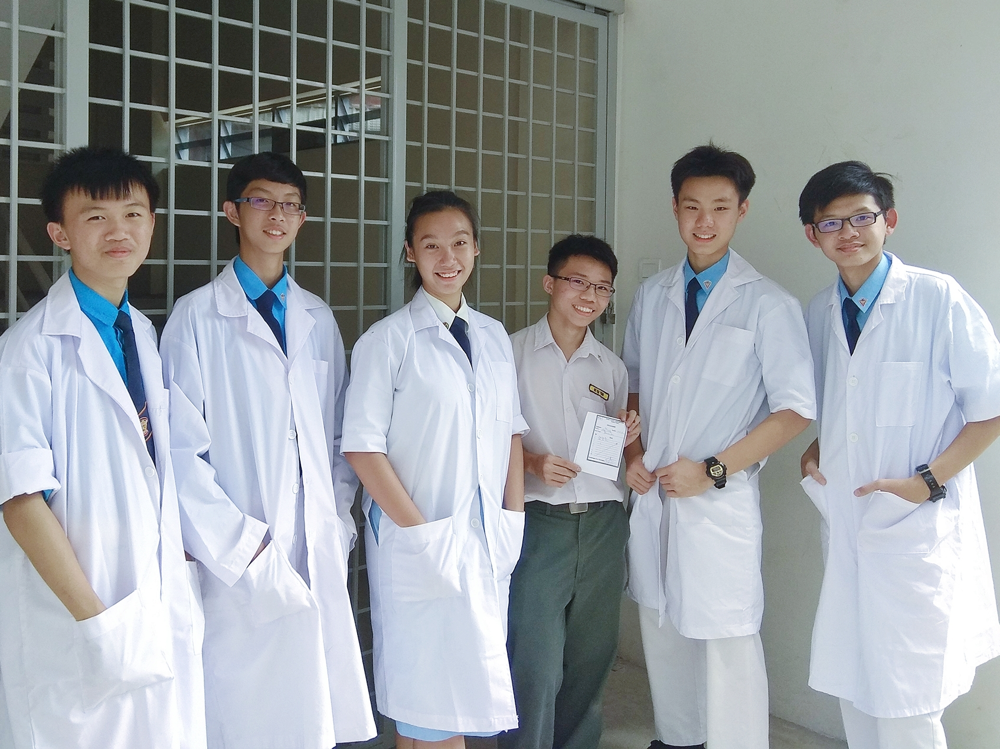

Secondary school
Sekolah Menengah Jenis Kebangsaan Kwang Hua
Sekolah Menengah Jenis Kebangsaan Kwang Hua
A brief dive into my secondary school life.
Background
For context, public Malaysian schools are only divided into two: elementary (or primary) schools, which are grades 1 to 6, and secondary schools, which are grade 7 to 11. In grade 10 and 11 (a.k.a. Form 4 and 5), students are required to choose what course they want to pursue: Science, Accounting, or Art. I have attended public schools from age 7 to 17. Needless to say, my time in secondary school were my most formative years as a person.
Similar to Korean after school classes, I attended them as well. The rest of my time was filled with extra curricular activites, including the Youth Cadet Troop, Science Club, and Student Council (a.k.a prefectorial board). I attended camps and courses, learned things I otherwise wouldn't be able to in classes and textbooks.
Academic
I have always loved Science. However, I acknowledge that loving it doesn't mean that it is easy to study. I was fortunate enough to be taught by Mr. Alfred during my after school classes. He specifically taught Physics and Chemistry, as he was a civil engineer in Singapore and grudated Masters in that field. What I find most valuable teachings is that Science is always based on logic, all that is left to look at the problem from different perspectives to gain a new understanding.
I find that being in Science course during grades 10 and 11 really enhanced my ability to think critically and to look at things in different perspectives. In my opinion, it was also thanks to the rise of the Internet, specifically YouTube in my case, that i was able to learn things outside of the syllabus. I would watch educational channels in my free time as a form of entertainment.
Extra curricular
Science Club
It was a relaxed environment where we would do experiments with the low budget we had. The highlight each year was the dissection of a frog. Out of the 5 years I've been there, I have done it 3 times. There were also other fun experiments, such as egg drop from a 2nd story building, different ways of making paper airplanes, making lava lamps, and etc. It was inspiring to see people around me light up at the different ways Science is around us. This has taught me creative ways to teach and learn about the world around me, while communicating our visions with teachers in charge.
It was a relaxed environment where we would do experiments with the low budget we had. The highlight each year was the dissection of a frog. Out of the 5 years I've been there, I have done it 3 times. There were also other fun experiments, such as egg drop from a 2nd story building, different ways of making paper airplanes, making lava lamps, and etc. It was inspiring to see people around me light up at the different ways Science is around us. This has taught me creative ways to teach and learn about the world around me, while communicating our visions with teachers in charge.
Youth Cadet Troop
I have spent most of my time in this club. In courses, I have learned how to tie different types of knots, morse code, pioneering, first aid, and more. We would have events every so often to raise money for the club. In regular weekly activities on Wednesday after school and on Saturday, we would train physically and practice on our marching. I have even acquired a Staf Sargeant ranking during the district examinations. I have learned that communication is crucial in any group or team environment, and only by working together, can greater accommplishments be achieved.
I have spent most of my time in this club. In courses, I have learned how to tie different types of knots, morse code, pioneering, first aid, and more. We would have events every so often to raise money for the club. In regular weekly activities on Wednesday after school and on Saturday, we would train physically and practice on our marching. I have even acquired a Staf Sargeant ranking during the district examinations. I have learned that communication is crucial in any group or team environment, and only by working together, can greater accommplishments be achieved.
Student Council / Prefectorial Board
This society is where I have learned the most in terms of cooperation between different departments. There would be "duties", where prefects are stationed around the school during certain periods to ensure students don't disobey or cause trouble. For example, Sport's Day is a day long event where regular classes are suspended in place of performances and other activities. Many students will try to seize this opportunity to go outside of school compounds or just cause trouble in general. Thus, it was essential that rules are upheld.
This society is where I have learned the most in terms of cooperation between different departments. There would be "duties", where prefects are stationed around the school during certain periods to ensure students don't disobey or cause trouble. For example, Sport's Day is a day long event where regular classes are suspended in place of performances and other activities. Many students will try to seize this opportunity to go outside of school compounds or just cause trouble in general. Thus, it was essential that rules are upheld.
Image Gallery
Left; Receiving certifications for Staff Sargeant ranking
Right; Preperations on Prefectorial Leadership Camp
2nd right; Duty at the main gate during Lunar New Year event
 Pioneering - Walkable bridge
Pioneering - Walkable bridge

3rd left; Science and Math fair